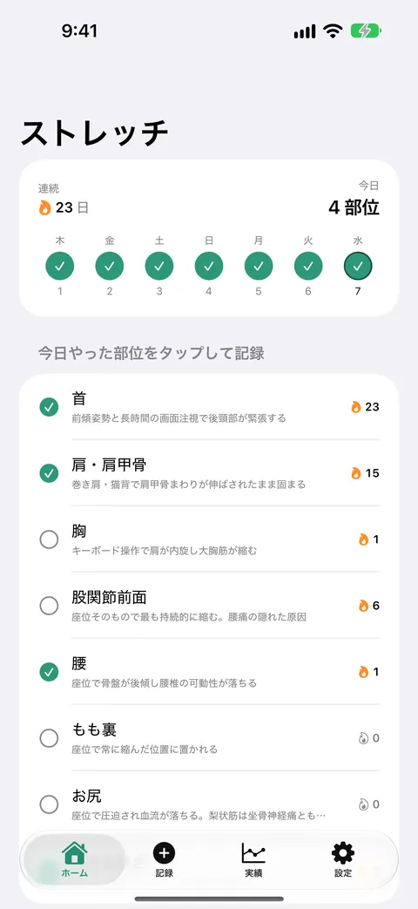
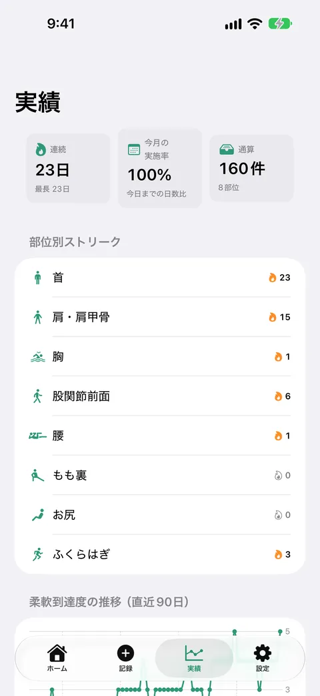
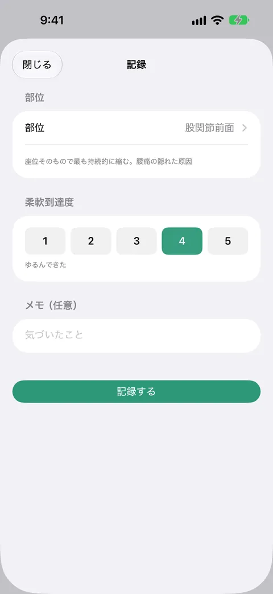
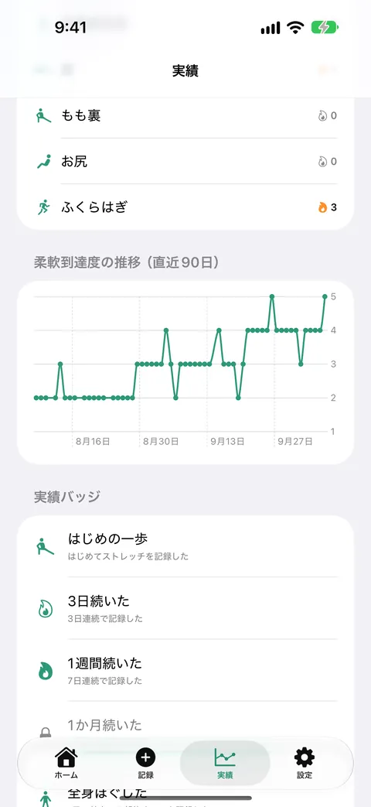
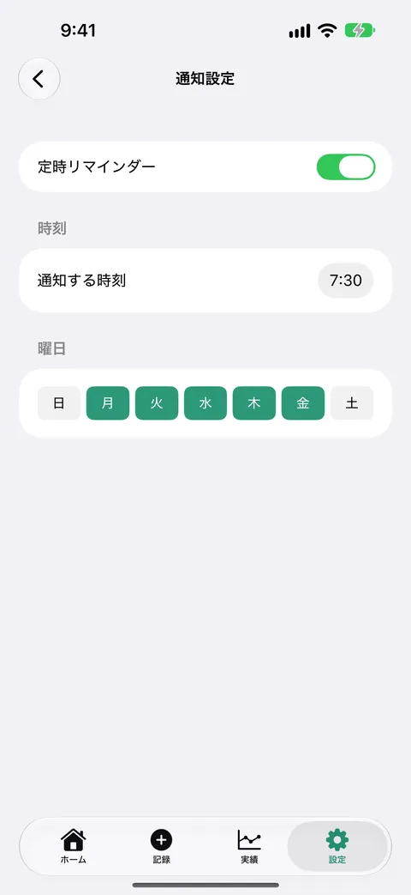

ストレッチ習慣ノート
部位別ストリークで柔軟到達度を記録
ストレッチした部位をタップして、5段階の「伸びた感じ」といっしょに記録できます。部位ごとの連続日数と、続けた成果のグラフが見られます。全機能が無料で、課金も広告もありません。





ストレッチ習慣ノートは、ストレッチをした部位を記録して、続けた日数を部位ごとに見られるアプリです。動画やレッスンはありません。やったかどうかと、伸びた感じだけを残します。
こんなときに
デスクワークで肩や腰が固まりやすく、ストレッチを続けたい。ただ、汎用の習慣アプリでは、ストレッチだけを管理するには機能が多すぎる。
できること
- 今日やった部位をタップして記録します。首、肩・肩甲骨、胸、股関節前面、腰、もも裏、お尻、ふくらはぎの8部位が使えます。1日に複数の部位を記録できます
- 部位ごとの連続日数が見られます。「首は続いているのに、股関節は3日空いている」といった偏りに気づけます。今日まだ記録していなくても、昨日に記録があれば連続は途切れません
- 「伸びた感じ」を5段階で残せます。メモも書けます
- 実績の画面で、月ごとの実施率、柔軟到達度の推移グラフ（直近90日）、続けた日数に応じて解除される実績バッジを見られます
- 決めた曜日と時刻に、リマインダーが届きます。通知の許可は、最初の記録を保存した直後に1回だけおたずねします。許可しなくても、ほかの機能は使えます
- 記録をCSVファイルで書き出せます
料金について
すべての機能を無料で使えます。課金も広告もありません。
安心について
記録はすべて端末の中だけに保存されます。外部のサーバーへ送信されることはなく、アカウント登録も不要です。アプリ自身が通信を行うことはありません。
本アプリはストレッチの記録のためのツールです。診断・治療・運動指導は行いません。痛み・しびれ・持病などがある場合は、医師などの専門家にご相談ください。